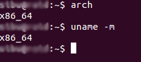

About this page
hello world,
This is my first web page. I am building this from scratch and will revise the page with new features and content as and when I learn/get them. So this is a work in progress.
Activities of each week
- First day (officially) with the new tutor Mr Francisco Sanchez
- Talked about documentation process
- Introduced to the new code/script based CAD tool, Kokopelli
- Had trouble installing the softwares
*link*
- finally i decided to install the latest version from the git, but it breaks the compatibility with the files (*.cad) from the previous versions. But the idea is the same. But anyway I find this tool to be unnecessarily complicated to achieve a simple task of designing the PCB. So I will continue to use the for common tools like Eagle-CAD or KICAD.
- Tried to learn and edit the FabIsp board by neil
- Discussion on documentation
Week 1
Week 1
Almost the first half of the day was spent rearranging the lab, keeping stuff organized. Then we were introduced to the Fab Academy program, archives of the previous years, lecture by Neil. We were told about the assignments and project and importance of the documentation of the same in evaluation. We were introduced to the software/hardware communication tools used in the program for the video conferencing. One of the tools I liked was the Linphone, mainly because it is supported in Linux and has an android app. We were all introduced to each other on the first day. On the second day one more person joined the program, Mr Dentis Thomas. Mr Luciano sent us a google form to fill, asking for details like our interests, what we are good at, languages and skills we have etc, softwares and tools we have experience with etc.
I was very happy to know that Linux is the preferred OS (except for the 3D Cad softwares), because I’m familiar with it and I use Linux as my primary OS. I always carry a portable HDD with a Ubuntu installed, it has almost every softwares I need. So just plug it into any available system, boot and I’m ready to go. I just had to update the OS with the latest packages and setup a few tools like mercurial, git (we will later move on to git). Since I was familiar with Linux and I already have my OS (UBUNTU 14.04.3) ready. I spent time helping others setup Linux and basic commands, Linux file structure and the concept of access permissions. I (with my friend Yadu, who is also familiar Linux) helped some of the participants to setup Linux in their machines, some of them preferred standalone installations along with Windows/Mac, while some preferred virtual machines.
While I was helping a colleague with Linux and terminal using the desk to write things down and explain, then Mr Luciano put a white board behind me and made me use the board, resulting in this; I like his enthusiasm and dedication.
Hover to see expanded image
From the third day onwards we were introduced to the 3D-cad. The tool Mr Luciano introduced us was Rhino, unfortunately it’s not available for Linux, it’s not free, not open-source... And the best CAD software in Linux is Blender but it’s too complicated. So I had to switch to Windows and install the Rhino3d, I used a 90 day trial license . Of course I could have used wine or a virtual machine, but from my past experience with wine I find it not stable enough, especially with advanced tools or games that are graphically heavy. The idea of a windows inside a virtual machine running on a portable Linux running from a Usb 2.0 HDD doesn’t sound good, it will be very slow. So I decided to switch to windows when I need to use the Rhino. We were given number of small assignments, though I had used softwares like SolidWorks before, rhino felt a bit difficult to begin with. May be because of my SolidWorks skills are rusty. These are some of the assignments we were asked to do.
Antimony Installation
On the last day of week1 (it was an holiday we decided not to have, but for Thiruvananthapuram batch it was), Mr Francisco Sanchez, Friend, former student, and co-tutor of Mr Luciano visited us and spent the day with us. He introduced us to a new tool named Antimony, a parametrical graph based 2.5D-CAD tool, also open source and can be compiled for linux. Compiling it for Linux was easy, just like compiling any software from source, just follow the ‘readme’ file, for Antimony, this file.
As said in the guide, you need to install QT, download it from here. Make sure that you download the lateset offline installer for Linux host and 64-bit or 32-bit version as per your system.
It's highly improbable that you have a 32-bit only OS these days, Easiest way to check would be entering uname -m or arch in terminal and if you see x86_64, then your machine is 64-bit.

Once you download QT installer, you need to run it. Before that make that installer an executable and run it by
chmod +x <QT_INSTALLER_FILE>
During the installation it will ask for the destination, I choose /opt because this is the preferred installation location for all external applications and all users would be able to use binaries installed at this location. This is why I used the
sudo ./<QT_INSTALLLER_FILE>sudo, as a normal user you don’t have access to /opt hence you can’t install anything here. But if you prefer to keep the QT installation exclusive to you, then you can choose not to use sudo and install QT somewhere in your home directory, BUT I recommend otherwise. For me the installtion created a directory /opt/Qt5.5.1/.
Next you need to install all the dependencies and build tools to compile the software.
sudo apt-get install build-essential libpng-dev python3-dev libboost-all-dev libgl1-mesa-dev lemon flex
sudo add-apt-repository ppa:ubuntu-toolchain-r/test
Antimony requires gcc 4.9 and Ubuntu 14.04 doesn’t support that, so we need to install it from the testing branch that’s what the last 4 commands do.
sudo apt-get update
sudo apt-get install gcc-4.9 g++-4.9
sudo update-alternatives --install /usr/bin/gcc gcc /usr/bin/gcc-4.9 60 --slave /usr/bin/g++ g++ /usr/bin/g++-4.9
Okay, now you are ready to compile the source, first lets get the source code, you can either manually download the source from the git page (the download as zip option) or you can clone the source using the command
git clone https://github.com/mkeeter/antimony
If you don't have git, install it sudo apt-get install git.
Now you have the directory antimony (if you have downloaded the zip manually, then extract it) create a directory named build inside it and move to the build directory.
mkdir antimony/build
and now compile by
cd antimony/build <YOUR_QT_INSTALLTION_DIRECTORY/YOUR_QT_VERSION>/gcc_64/bin/qmake ../sb.pro
In my case the Qt was installed at /opt/Qt5.5.1 and version was 5.5. Note that in the code
make -jX make -jX, X has to replaced with a the number of threads you want tthe compiler to launch,I usually keep X=number of processor cores-1. So my commands would be (I X=3 for me as the system I work has 4 real cores).
/opt/Qt5.5.1/5.5/gcc_64/bin/qmake ../sb.pro
I didn't have any error, but if you do, a little googling with error will help you solve the issue. Once you compile it you can launch antimony by
make -j3 ./app/antimony
You may now install by make install or by adding the path to your profile. To add the path to profiles, open ~/.profile in your favorite text editor and add the following line
PATH=$PATH:<PATH_TO_ANTIMONY_BUILD_DIRECTORY/app>
For me, I had to append the following line at the end of the .profile file
PATH=$PATH:~/fab/antimony/build/app
You can now launch Antimony by typing antimony in terminal (only after updating the profile by source ~/.profile or by loging out and re-login)
We explored Antimony for some time, I like the fact that everything is linked together. You change one parameter of one object and all of a sudden every ‘child’ and overall design changes, no need to start from the scratch. At the same time the software is all code based and may poss a change to newbies.